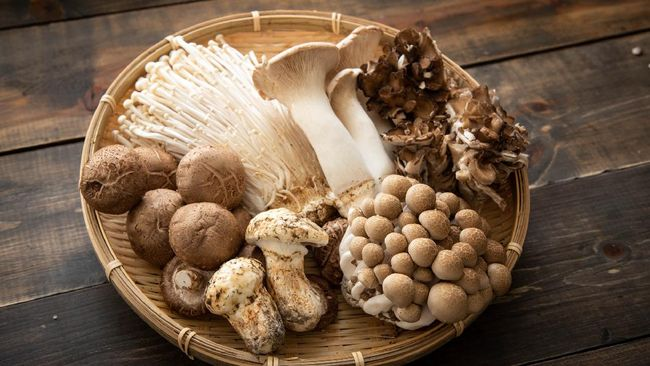
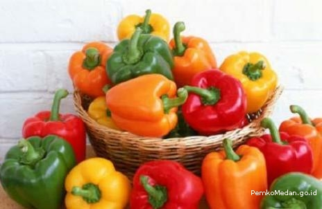

Jamur tinggi akan selenium, vitamin B6, riboflavin, potasium, hingga zink. Mengonsumsi sayur ini dapat jumlah yang tepat dapat membantu menguatkan sistem imun tubuh, menurunkan tekanan darah, hingga menjaga berat badan ideal
Paprika menjadi jenis makanan yang dimanfaatkan untuk penyedap rasa. Siapa sangka, jenis makanan ini justru mengandung vitamin C dan serat. Nutrisi tersebut memiliki manfaat yang sangat beragam, mulai dari menurunkan tekanan darah tinggi hingga menjaga fungsi pencernaan

